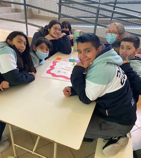
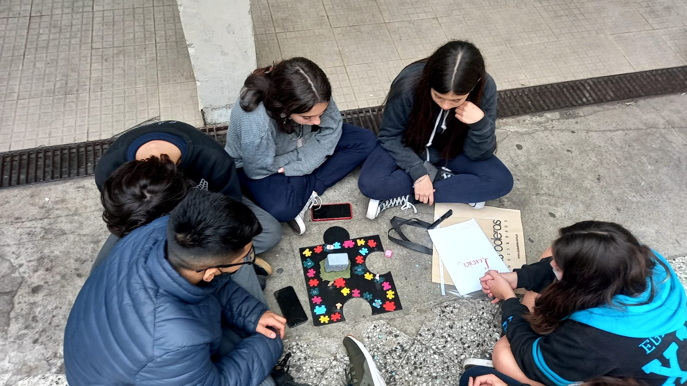
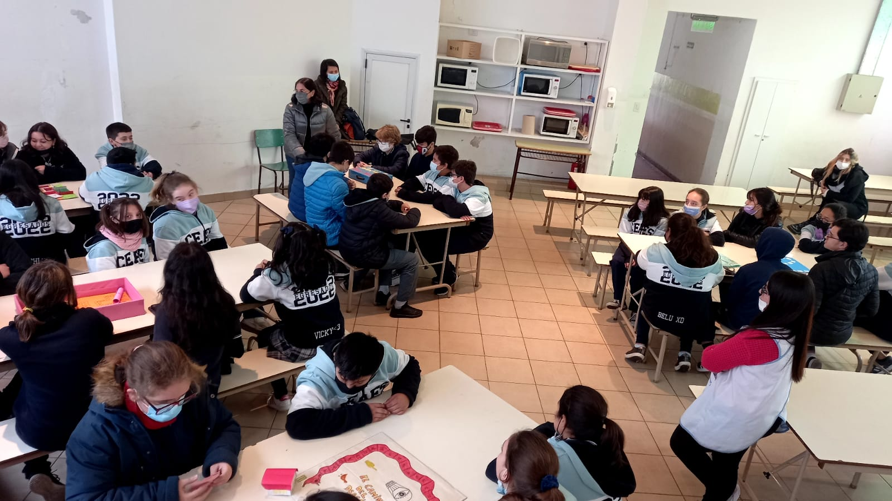

La aventura de inventar juegos.
Los alumnos de 2do año se animaron a crear un juego de mesa exclusivamente inventados por ellos y fue probado por los chicos de 7mo grado
Por Morena Coria (2°B)
Los alumnos de 2do año leyeron la novela del escritor y periodista
argentino Pablo de Santis, llamada “El inventor de juegos” con la Prof.
María Ana Rago.
Esta novela se trata de un nene llamado Iván Drago amante de los juegos
de mesa. A partir de esto surgió la idea de que los alumnos hagan sus
propios juegos inspirados en la novela pero sin ser iguales a los juegos que
aparecían en ella. Para esta se crearon grupos de cuatro integrantes y
empezaron a surgir las ideas de utilizar dados, cartas, ruletas, y otros tipos
de juegos. Luego de tener la idea principal de los juegos que iba a armar,
cada grupo comenzó a originarse con su propio reglamento, tablero, fichas
y otros elementos; las reglas fueron elaboradas por ellos mismos a mano
(escritas o impresas). Luego de realizarlos fueron presentados a la
profesora y calificados por ella. La Directora de Estudios al ver lo creado
por los alumnos tuvo la idea de jugarlos y probar si estos estaban
realmente hechos bien con sus respectivas reglas, para esto convocó a los
alumnos de 7mo grado A y B. Llegado el día los alumnos se reunieron en el
Salón del Encuentro a jugarlos. Esto fue un desafío para ellos y una idea
con el propósito de ver si los juegos estaban correctamente hechos.
Fue una experiencia que duró aproximadamente 1 hora y media. Este
encuentro fue bueno para los alumnos de 7mo grado A y B que
compartieron tiempo con los de 2do A y B de secundaria.


